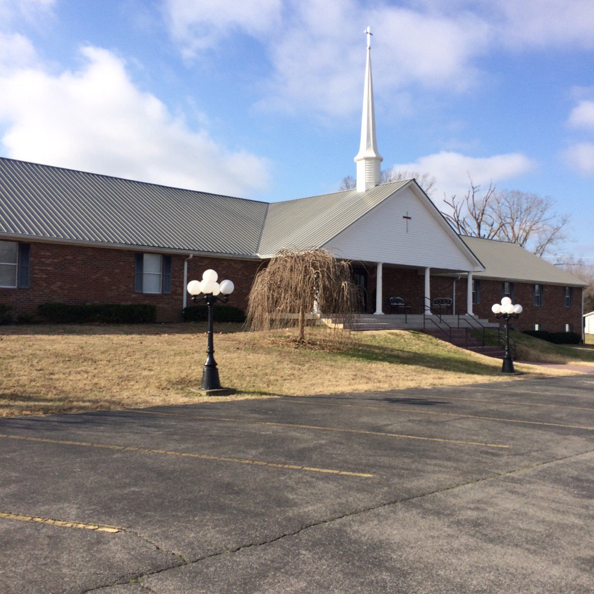
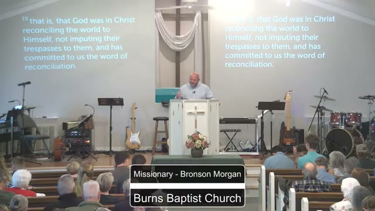
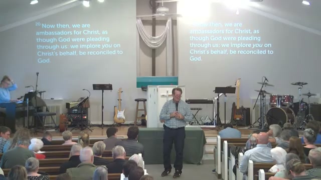
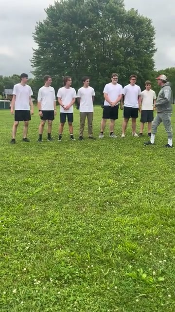
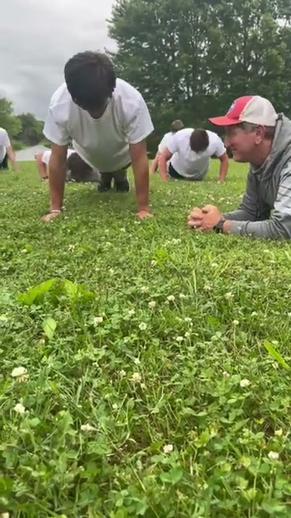
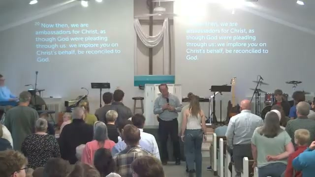
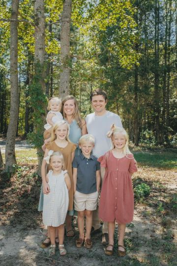

Sunday School
9:00 Sunday mornings. Open the Word together before worship.
Burns, Tennessee
Burns Baptist Church — a faith family on the hill off Hwy 96. Loving God. Loving people. Making disciples.

Sunday School 9:00
Worship 10:00
Worship 6:30
Kids Connection 6:30
Wednesdays 6:00–8:00
Youth Pastor Mason Cook
Kids everywhere. Large families. A country church that actually knows each other. We are a faith family that passionately believes in the work of our ministry.





Religion won’t save you. A good family won’t save you. You need Jesus.
That love of Christ should compel us — not head knowledge, not church titles. Him.
9:00 Sunday mornings. Open the Word together before worship.
Youth ministry Wednesdays 6:00–8:00 with Mason Cook. Students who love Jesus and each other.
Wednesday 6:30. Kids learning the gospel while the church gathers.
Pastor
Loves and serves the Lord and people. Know Jesus. Bring Him glory.
Youth Pastor
Leads YOKE. DCHS ’20, UT Martin ’23. On staff since April 2023.

Worship
With Candice and their five kids. What happens on the hill is at the center of their life.
Parking lot, foyer, sanctuary — country church on Hwy 96. You’re welcome.
Plan your visit